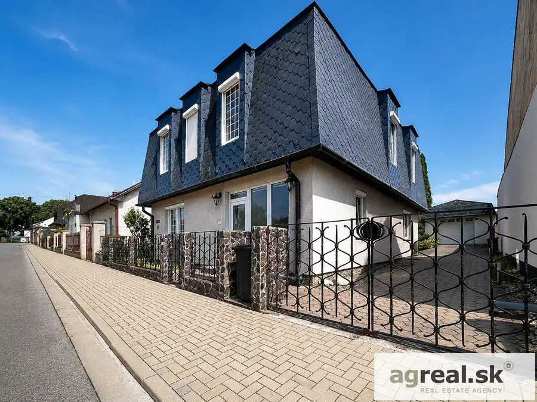
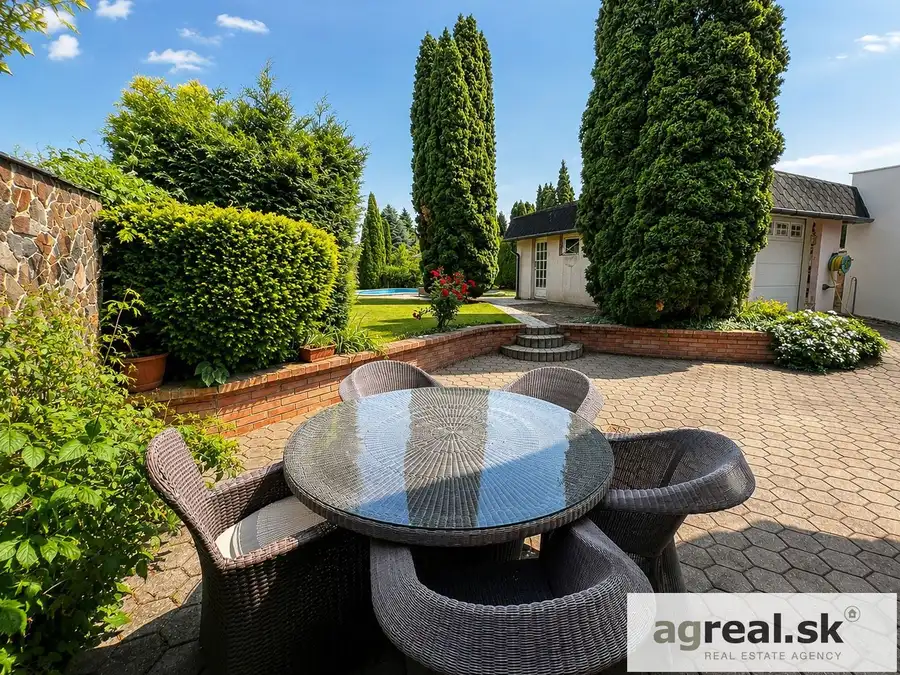
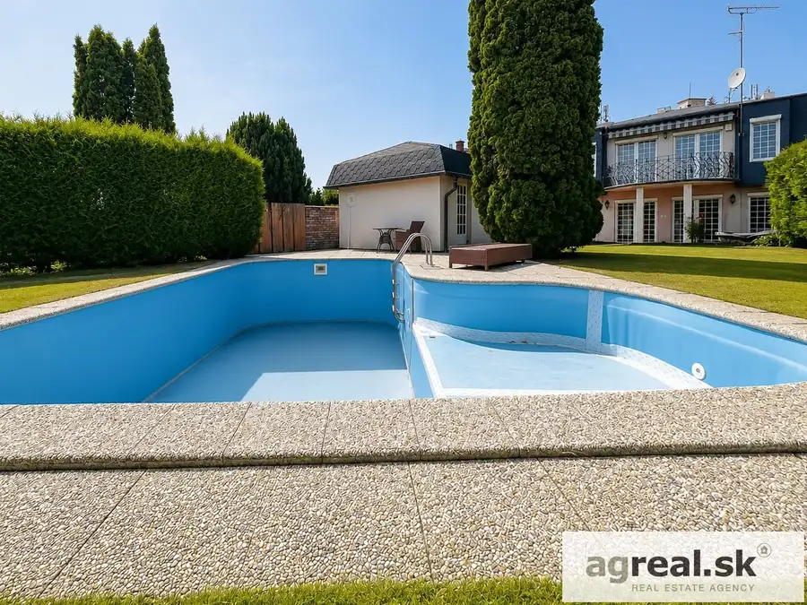
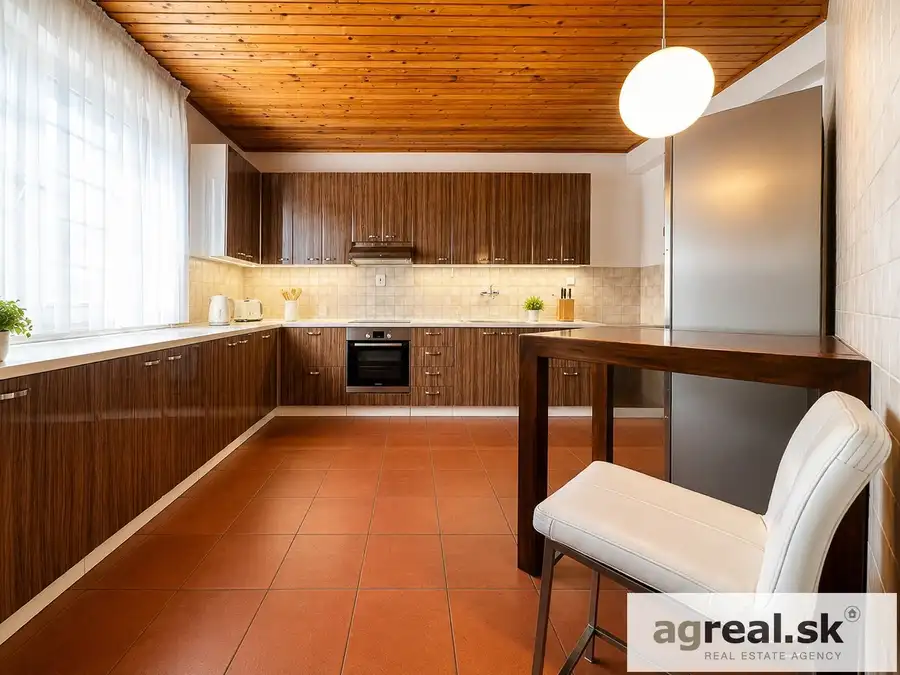
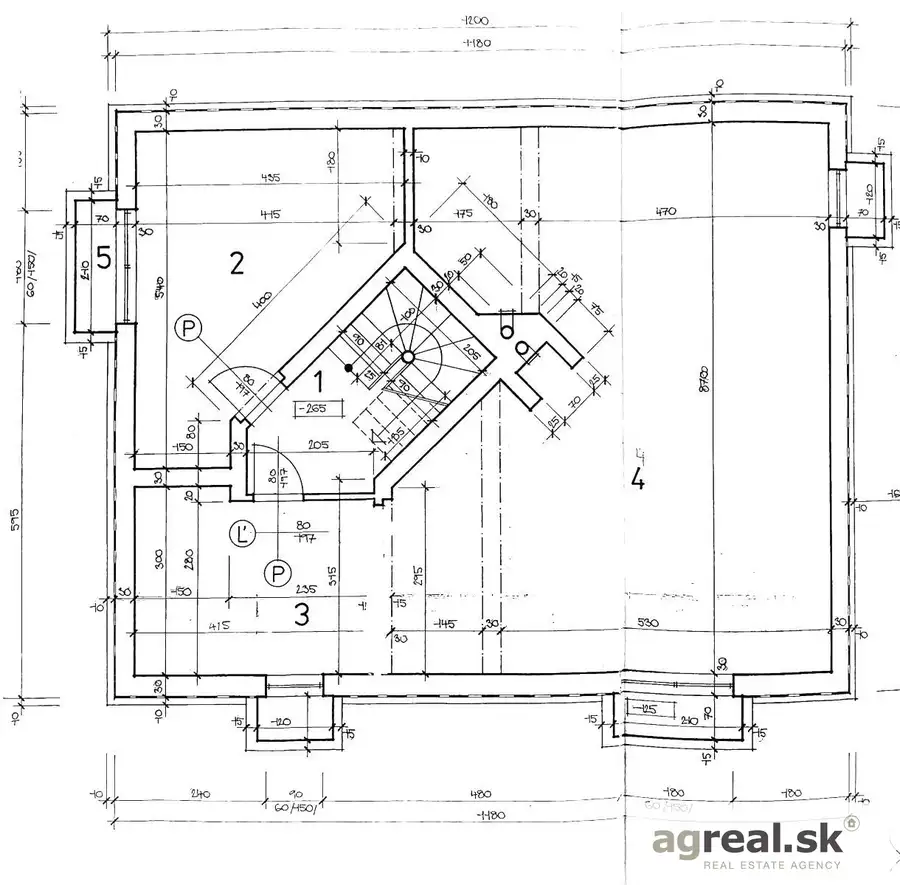
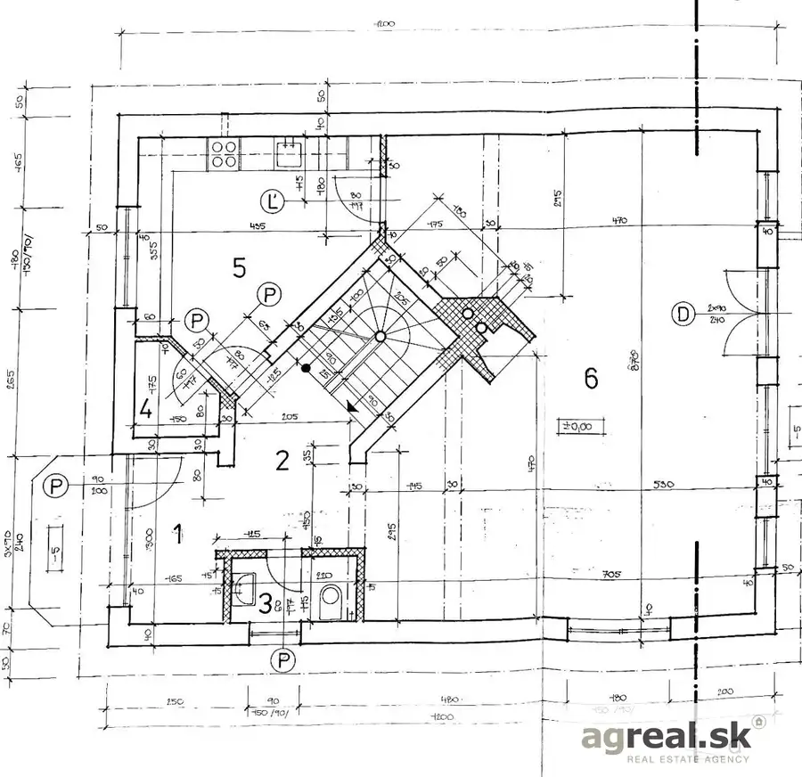
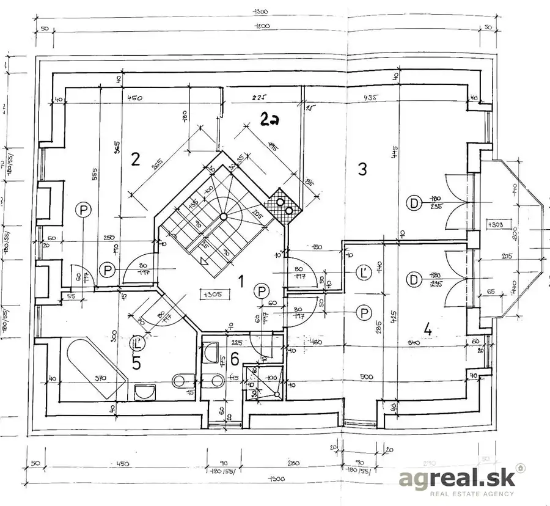
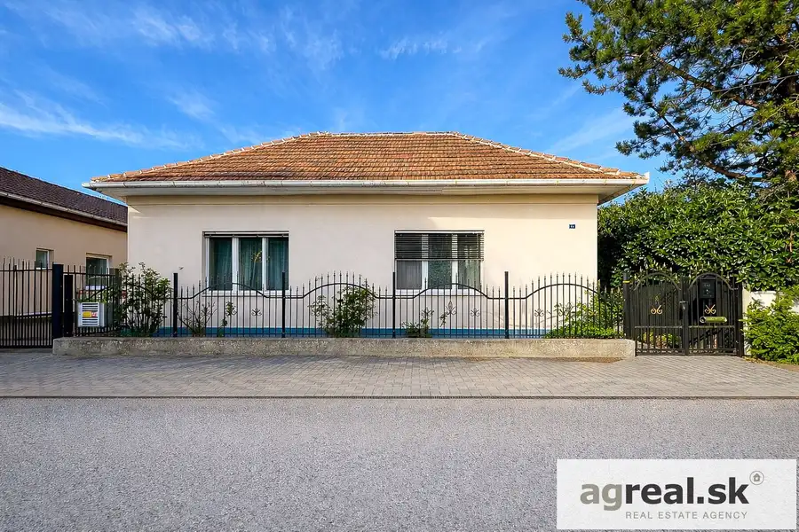
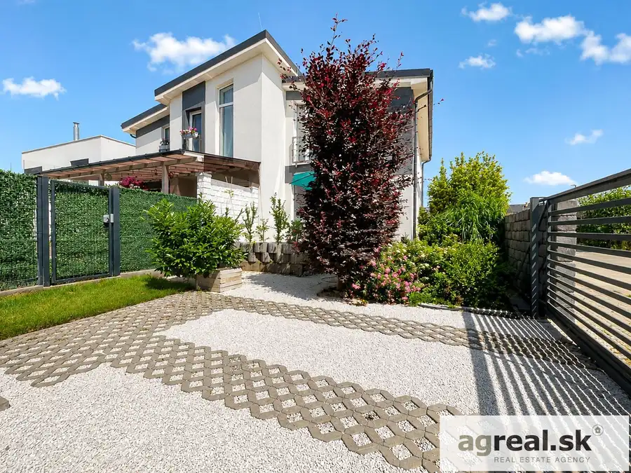
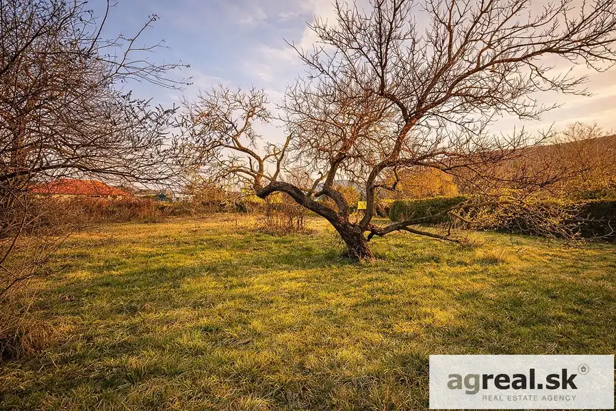

Predaj–priestranný 5-izb. rodinný dom (ÚP 260,85 m2, pozemok 630 m2) s bazénom, saunou a samostatnou garážou, ul. Slobody, Topoľčany
Topoľčany







- Plocha260.85 m²
- StavČiastočná rekonštrukcia
- VlastníctvoOsobné
O nehnuteľnosti
Exkluzívne z poverenia majiteľa Vám ponúkame na predaj kvalitne postavený rodinný dom v pokojnej časti- širšieho centra Topoľčian, ul. Slobody. Dvojpodlažná stavba 5 izbového rodinného domu (kolaudácia r. 1995, posledná rekonštrukcia r. 2015) zaručuje pokojné a bezpečné bývanie a nachádza sa v tichej rezidenčnej časti. Dom je napojený na všetky inžinierske siete (voda, elektrina, plyn, kanalizácia, internet) a má vlastnú studňu. Okolie domu je veľmi pekné a upravené a pôsobí vzdušne. Mesačné náklady na prevádzku domu sú 165,- EUR (elektrina, plyn).Pozemok o výmere 630 m2 je útulný a poskytuje úplné súkromie. Zastavaná plocha domu je 113 m2, celková úžitková plochá je 260,85 m2, dom je kompletne podpivničený- pivnica je presvetlená svetlíkmi, používa sa ak pracovňa a nachádza sa tu aj sauna. Samostatná garáž s automatickým otváraním má výmeru 24,8 m2, pozdĺž domu je možné parkovanie ďalších 2 áut. Záhradná terasa so zámkovou dlažbou má približne 50 m2. Na 1. poschodí je terasa o výmere 8 m2. Dispozícia:-1. PP o výmere 87,9 m2:-Práčovňa s vaňou-Pracovňa s technickým zázemím-Schodisko-Sauna1.NP o výmere 86,8 m2:-Vstupná hala-Samostatná toaleta s umývadlom-Schodisko-Obývačka spojená s jedálňou s výstupom na záhradnú terasu 50 m2-Kuchyňa-Komora2.NP o výmere 86,15 m2: -Schodisko-Chodba -Samostatná toaleta s umývadlom -Kúpeľňa s vaňou so sprchovou zástenou a toaletou-Kúpeľňa so sprchovým kútom a toaletou-2 x spálňa s výstupom na terasu 8 m2-Hlavná spálňa s priestranným šatníkom Materiály a vybavenie: Dom je postavený z klasických materiálov s ohľadom na kvalitu a trvácnosť: tehla + zateplenie Terranova, drevené dubové schody, bezpečnostné dvere, interiérové dvere, dlažby na prízemí, korok na poschodí, osvetlenie, termostat. Dom má plastové okná so sieťkami a žalúziami. Priestranná a kompletne vybavená kuchynská linka s komorou. Strecha tvorí drevený manzardový krov s krytinou- asfaltovým šindľom, klampiarske konštrukcie strechy sú z medi, ríny sú takisto medené a voda z nich odteká do kanalizácie. Kúrenie: Celý dom má podlahové kúrenie. Kúrenie zabezpečuje nový (2 r.) automatický plynový kondenzačný kotol Vaillant s 120l zásobníkom na vodu pričom má každá miestnosť samostatné ovládanie teploty. V dome sa nachádza aj krb. Záhrada, terasa, garáž a bazén: Pekná útulná okrasná záhrada s orientáciou na juhovýchod s dobre využitým priestorom a intimitou. Vonkajšia voda, vonkajšia elektrina + 1x 380 V v garáži aj v pivnici. Záhrada ako aj terasa je osvetlená vonkajšími svetlami. Na záhrade sa nachádza bazén o výmere 35 m2 (7 x 5 m) s kompletnou chémiou a filtrami. Pri bazéne sa nachádza skleník. Pozemok je zpredu kompletne oplotený- kameň- výplne ručne kované. Samostatná garáž s automatickým otváraním má výmeru 24,8 m2. Na záhrade sa nachádza studňa, ktorá je napojená čerpadlom na bazén a na automatickú závlahu. Lokalita: Dom sa nachádza v tichej časti mesta Topoľčany, v blízkosti sa nachádza park, potraviny, Kaštieľ Továrniky, škola a škôlka. Príjemné tiché prostredie v zástavbe rodinných domov na skok do centra mesta.Ak Vás tento dom zaujal, radi vás privítame na obhliadke. Cena: 269.000,- EUR vrátane provízie a kvalitného právneho a katastrálneho procesuKontakt: 0903/ 240 848, alzafari@agreal.sk Text a fotografie sú autorským dielom a majetkom realitnej kancelárie AG Real Cena zahŕňa:• preverenie právneho stavu a tiarch danej nehnuteľnosti z dostupných informácií z katastra nehnuteľností• kompletný právny servis spojený s vyhotovením rezervačných a kúpnych zmlúv zabezpečený advokátmi s dlhoročnou praxou v oblasti realitného a katastrálneho práva• realitné poradenstvo a asistencia• províziu za sprostredkovanie• služby spojené s odovzdaním nehnuteľnosti a prepisom energií u jednotlivých dodávateľovV prípade financovania nehnuteľnosti prostredníctvom hypotekárneho úveru:• zabezpečenie dostupného znalca • bezplatné sprostredkovanie hypotekárneho úveru prostredníctvom našich zmluvných partnerov
Parametre
- Bezpečnosť
- Bezpečnostné dvere
- Doprava
- Diaľkový autobus, MHD, Cesta
- Druh
- Rodinný dom
- Druh domu
- Klasický dom
- Dátum zverejnenia
- 03. 08. 2026
- Energetický certifikát budovy
- V príprave
- Orientácia
- Juhovýchodná, Severozápadná
- Plocha pozemku
- 630 m²
- Počet izieb / miestností
- 5
- Počet kúpeľní
- 2
- Počet nadzemných podlaží
- 2
- Počet podzemných podlaží
- 1
- Počet spální
- 3
- Príprava teplej vody
- Súbežne s ÚK
- Prístupová komunikácia
- Asfaltová
- Rok poslednej rekonštrukcie
- 2015
- Rok výstavby
- 2026
- Stav nehnuteľnosti
- Čiastočná rekonštrukcia
- Telekomunikácie
- Káblová TV, Internet
- Terén pozemku
- Rovinatý
- Typ
- Predaj
- Typ konštrukcie
- Tehlová
- Vlastníctvo
- Osobné
- Vybavenie
- Technická miestnosť, Vyhradené parkovanie, Záhrada, Bazén, Krb, Skleník
- Vykurovanie
- Podlahové, Krb, Lokálne
- Zastavaná plocha
- 113 m²
- Zdroj tepla
- Zemný plyn
- Úžitková plocha
- 260.85 m²
Kde to je


Mohlo by Vás zaujímať

DomNové 189 900 €Predaj– starší 3-izb. rodinný dom (ÚP 85 m2, pozemok 389 m2) na rekonštrukciu, ul. Kvetná, Nitra- Chrenová Nitra 85 m²
DomNové 249 900 €Predaj- 4-izb. nízkoenergetická novostavba RD s 3 x parkingom ( ÚP 107 m2 + 20 m2 terasa, 238 m2 pozemok) v novej štvrti obce Banka, ul. Moravanská Banka 107 m²
PozemokNové 199 000 €Predaj- slnečný stavebný pozemok (623 m²) v pokojnej časti mesta Hainburg, ul Jakobusgasse, Rakúsko Reality 623 m²